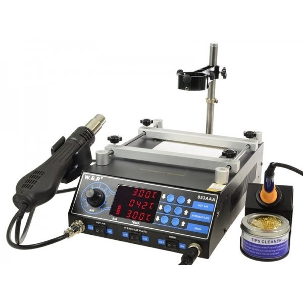
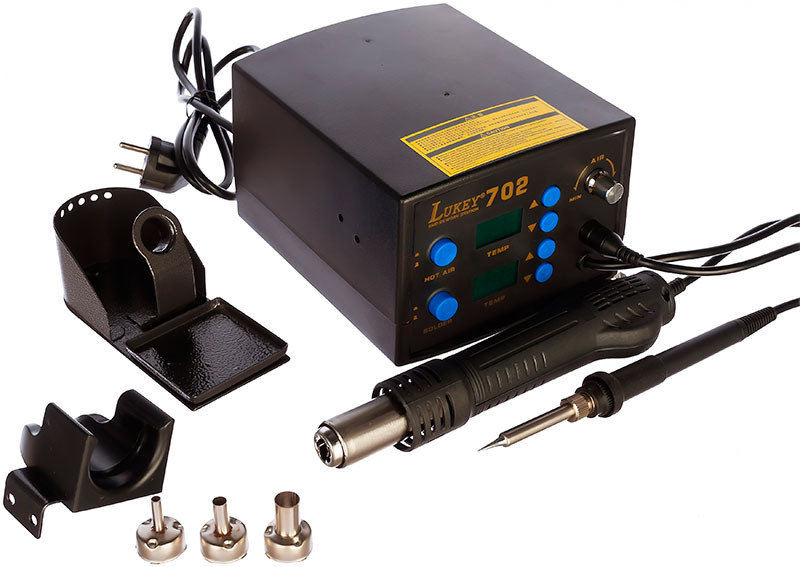

Ремонт
Что понадобится
Для ремонта нам понадобится:
Паяльная станция с нижним подогревом.
Это, конечно, при совсем идеальных условиях. Для замены чипов памяти и мелких элементов подойдет и станция с феном.
Если планируется замена BGA элементов, так же необходимо: высокоактивный флюз, припой в шариках необходимого диаметра и трафареты.
Процесс пайки BGA элементов
Сперва необходимо снять систему охлаждения.
Если элемент небольшой(mosfet, конденсатор и т.д.), то допускается съем без подогрева платы. Более крупные элементы(чипы памяти, GPU, контроллер питания) рекомендуется снимать после разогрева платы с помощью ниженего подогрева, доводя до 180 градусов.
После снятия BGA элемента, с его контактных площадок и с площадок платы убираются остатки припоя с помощю оплетки.
Затем с помошью смывки удаляются остатки старого флюса. В качестве смывки можно использовать растворитель КАЛОША + спирт 50/50.
Наносим на контактные площадки BGA элемента тонкий слой флюса. Накладываем трафарет и просыпаем шариками нужного диаметра, чтобы они заполнили все отверстия в трафарете.
Равномерно прогреваем шарики припоя феном при температуре 250-270 градусов, до оплавления.
Ждем остывания элемента, снимаем трафарет.
Если все сделано правильно, то мы увидим, что все шарики припоя припоялись к контактам BGA элемента.
Если какие-то шарики оторвались вместе с трафоретом, то необходимо на плащадки с которых они оторвались установить шарики вручную и аккуратно прогреть феном.
Смываем остатки флюса с BGA элемента.
После того как смыли остатки флюса, наносим тонкий слой нового флюса на плату, где должен находиться BGA элемент. Устанавливаем по меткам на плате элемент. Ставим плату на подогрев и с помощью фена запаиваем элемент.
Когда элемент "сядет" на свое место выключаем подогрев и ждем пока он остынет не охлаждая его принудительно.
Готово! По завершению пайки остатки флюса смываются.